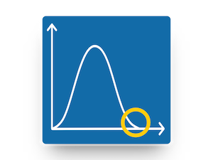

| Authors | Michael Dorner, Florian Angermeir, Davide Fucci, Daniel Mendez |
|---|---|
| Poster |
Software underpins almost all research and is, in one way or another, at the core of scientific discovery today. We rely on high-quality and reliable software for high-quality and reliable results. Therefore, the engineering of such research software cannot be an afterthought. Research Software Engineering (RSE) bridges this gap between the complex demands of scientific research and the need for reliable, and maintainable software solutions for researchers. Addressing these needs puts us into two roles, researchers and software engineers. As researchers, most often we are also teachers. Consequently, the question naturally arises: How can we tap the minds of our brightest students for research software engineering? In this experience report, we reflect on our experiment to integrate research software engineering as part of the regular curriculum for software engineering students at Blekinge Institute of Technology, Sweden.
The course introduces hands-on testing and quality assurance techniques for software systems for students from the SE B.Sc. program and AI M.Sc. program at Blekinge Institute of Technology, Sweden. The instance of the course, the experiment was conducted in took place in Spring 2023. 40 students enrolled in the course as part of their curriculum.
As the subject (research software) of the experiment, we selected a real-world simulation for information diffusion in code reviews at Microsoft, Spotify, and Trivago modelled as networks. As we implemented Dijkstra’s algorithm for time-varying hypergraphs in Python and the code review systems are partially huge (e.g., Microsoft's code review consists of over 30.000 developers), the simulation is computational expensive: On conventional hardware, it takes several days to simulate all information spreads and process the results. Initially, the code was accompanied by a minimal testing suite covering the basic needs.
We integrated the research software as practical group projects with 4 to 5 students. Each project group had to implement a minimum test suite to be executed in a CI pipeline and choose a project focus such as performance testing or algorithmic verification.
As a result of the integration, we observed three main benefits for our research software at hand.
Our research software grew a comprehensive test suite. This is reflected in, first, the test suite now ensuring satisfaction of typical requirements by the software artifacts. Second, added coverage of regression issues through unit and integration tests. And third, two project groups extended the suite beyond classical testing to catch memory-corruption and safety bugs through fuzzy tests.
To ease the barriers for students at the project start, we improved the documentation in size and quality. The improved documentation is beneficial not only for students to effectively interact and extend the research software, but also for other researchers reproducing or replicating our simulation, ultimately fostering scientific growth through traceability, transparency, and usability.
We did not provide a unified hardware setup but relied on the students' computers. To cover the large diversity in hardware, operating systems, and software environments, we removed all OS and hardware requirements and minimized code dependencies. Being agnostic about hardware and operating systems contributes to easier use, maintenance, and extension of our research software facilitating adoption among the research community.
However, there is no such thing as a free lunch. We put - upfront and continuously to this day - substantial efforts to improve the documentation and minimize dependencies and requirements.
The biggest drawback we found was the uncertainty about the intellectual property of contributions made by students as part of their studies. Our current and limited understanding is that at least some jurisdictions like Germany and Sweden prohibit to enforce usage rights (like a specific open source license) for intellectual property of students developed in the context of their studies, in our case, code. This uncertainty rendered effective integration of students' code in our research software impossible.
Integrating research software engineering into teaching at BTH substantially improved our research software, but it required noteworthy effort. The most prominent obstacle remains the uncertainty about the intellectual property of code contributions from students to the project.